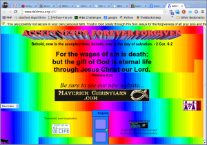
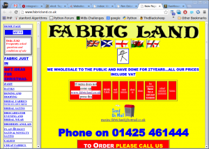
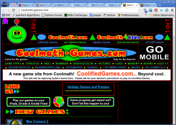
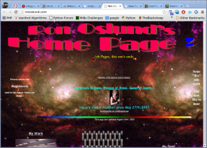
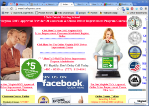

Note: This article is from 2012. Many of these websites have likely been updated or may no longer exist. This serves as a historical reference for web design practices of that era.
Here are some screenshots of the worst websites I have ever seen. Most of them use too many colors, have moving elements, or use black backgrounds. One uses frames (which were already outdated by 2012).
{kind=link}

{kind=link}

{kind=link}

{kind=link}

{kind=link}

Do you know similar examples of bad website designs?
What Makes a Website Design "Bad"?
Looking at these examples from 2012, we can identify common problems:
- Too many colors: Overwhelming color schemes that hurt readability
- Moving elements: Distracting animations and scrolling text
- Poor contrast: Dark backgrounds with poor text visibility
- Outdated technology: Using frames and other deprecated HTML features
- Information overload: Cramming too much content without proper organization
- Inconsistent navigation: Making it hard for users to find what they need
Modern web design has evolved significantly since 2012, emphasizing: - Clean, minimalist designs - Mobile responsiveness - Accessibility standards - Fast loading times - User-centered design principles